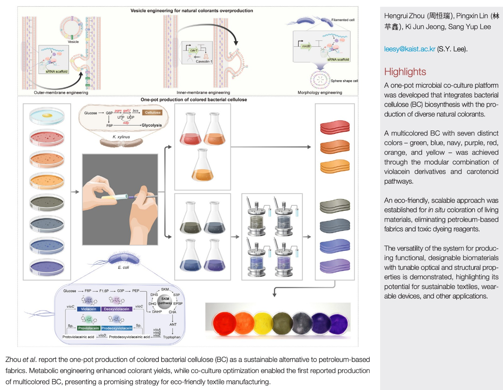
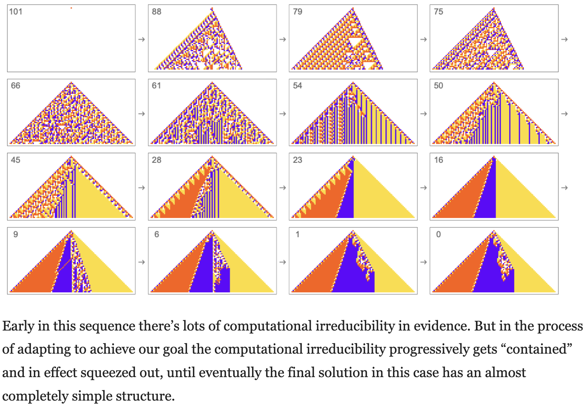

Tab Clearning (Nov 2025)
Clearing some recent tabs. I’m not sure how useful these posts are to anyone else, but they help me finally read + close things I’ve been meaning to get to.

- I’m getting into bio for the pretty colors :D Found this cool paper (https://www.cell.com/trends/biotechnology/fulltext/S0167-7799(25)00407-X) still need to read it properly but fun to see a recent example of things covered in the bioprocess engineering book I’m busy with.
- TEACHING PRETRAINED LANGUAGE MODELS TO THINK DEEPER WITH RETROFITTED RECURRENCE - recurrent models seem to be having a moment, and I’m always a fan of starting from existing models to try stuff out.
- LeJEPA paper

What’s Special about Life? a nice Wolfram piece - the man makes good computation ‘model organisms’ for getting his point across!
Eye testing using laser speckle TIL I am near sighted.
What Begets the End (fiction/short story) lots of good ai-safety-adjacent writing recently
Blue roses (they are not blue)
You should google ‘acoustic droplet ejection’ (ADE) / acoustic liquid handling — wild tech, e.g. the echo device can dispense liquids in 10nl droplets to mix different reagents together in tons of different wells for automated experiments at tiny scale. It sends an ultrasound pulse to sense the resevoir bottom, the meniscus and some liquid properties, then a strong pulse that ejects a droplet up and into an overturned well above. Crazy stuff.
Android dreams - an attempt at an AGI2027 style post for robotics. I find it hard to get much from these stories - robotics seems to be improving, the predicted developments often make sense, but guessing how things go in terms of quantities, dates, and further out scenarios is tricky.
Varieties of doom sumary: ‘doom’ comes in many debatable flavours. (Seems like I have an AI safety skew in these links, which I don’t think reflects my browsing habit, only my ‘tabs I don’t actually read then close’ habit!)
Algae research supply sell various cool things including a kit where you feed brine shrimp flourescent microplastics haha
Pyrofarm sell bioluminescent algae, extremely cool
I’ve been looking around at bio-related offerings, https://www.bio-world.com/, https://www.carolina.com/gene-expression-advanced-topics/glow-in-the-dark-transformation-kit/FAM_211086.pr?srsltid=AfmBOoqRoXZ9qhJH6bVUdAYbZov44Z08g6H6nLD0SktbJE5kCNdo7Wdg, https://amino.bio/products/engineer-it-kit, seem like cool kits are available and affordable. Also vectorbuilder.com, https://www.twistbioscience.com/products/genes, https://www.genscript.com/, seem like options for custom plasmids and addgene looks cool.